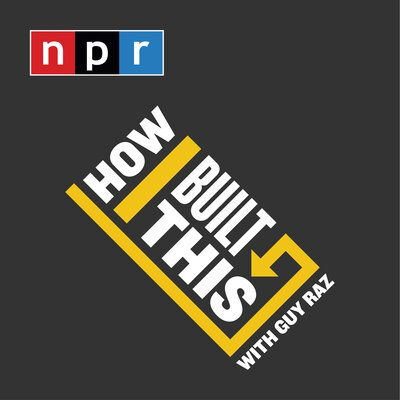
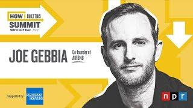
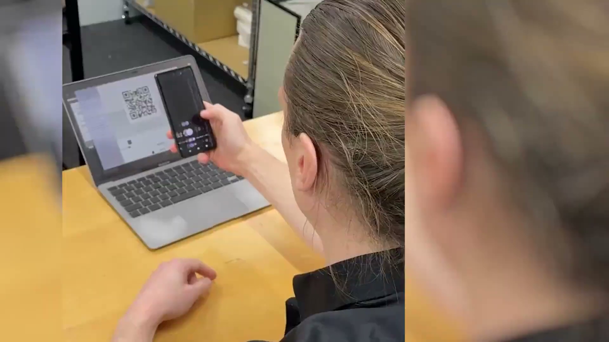

Future-me, On Air: Personalized Podcast Role-Play for Entrepreneurial Mindsets
Katsufumi Matsui, Rintaro Chujo, Takeshi Naemura
2026 Annual USASBE Conference · 2026年2月21日
Katsufumi Matsui, Rintaro Chujo, Takeshi Naemura
The 4th International Symposium on Entrepreneurship Education in Asia
2026年10月10日
本研究はJSPS科研費 JP25K16727 の助成を受けたものです。
OECD：狭義と広義のアントレプレナーシップ教育 (Lackéus, 2015)
ビジネスを創出する能力の獲得
一般的な場面に応用できる個人の発達
すべての学生が対象
（アントレプレナーシップ教育とは）自ら社会課題を見つけ、課題解決に向かってチャレンジしたり、他者との協働により解決策を探求したりすることができる知識・能力・態度を身に付ける教育であり、起業家を育成するためだけのビジネス教育とは異なる。 (文部科学省, 2024)
本研究は、双方のアントレプレナーシップ教育を射程とする。


How I Built This（NPR、約800エピソード）
起業家が挫折や迷いを語る
起業家ゲスト講義4回を含む7週間の授業：受講群と統制群を比較 (Matsui et al., 2020)
ゲスト講義中心の教育では、期待した効果は得られなかったと考えられる
一方で、起業への適性を見つめ直す機会になった可能性
教育と起業意思の関連は小さく、教授法に左右される (Bae et al., 2014; Nabi et al., 2017)
Bandura, 1997; Newman et al., 2019; Zhao et al., 2005; Taji et al., 2023
他人の物語を聞くだけでなく、
自分自身の起業家としての未来を
リハーサルできたら？
学生自身の経験から生成AIが台本を書き、
未来の自分として
起業家ポッドキャストに出演する
行動ベースの教育は、自己効力感とその後の起業行動を高めた (Gielnik et al., 2015, RCT)
振り返りを伴う、失敗しても安全な学習 (Pittaway & Cope, 2007)
ポッドキャスト
「How I Built This」
という形式
ロールプレイ
聞き手ではなく、
自分がゲストになる
生成AI
自分の経験から
インタビュー台本を作る
学生からは好意的に評価されているが、学習成果への効果はさらなる検証が必要 (Gunderson & Cumming, 2022)
本研究では未来の自分に会うだけではない。
未来の自分として声に出して話す
Future-Me, On Air
パーソナライズされた生成AIポッドキャスト・ロールプレイによる
起業家的自己効力感の支援
聴衆から、自分自身の未来の主人公へ

「2030年。あなたは、自分の知識や人とのつながりをもとに、
小さなプロジェクトを始めました。
ホストは、当初の計画がうまくいかなくなった瞬間について尋ねます」
インタビューの設定例
授業前：他の2〜3ペアのポッドキャストを聞く
人は3つの段階で新しい役割に適応する (Ibarra, 1999)
ゲスト講義は主に、ロールモデルを観察する機会。
Future-Me は3段階すべてを支えるよう設計
AIの出力を、人間同士の批評的な議論を促す触媒として使う
（中條 et al., 2025）
AIが本人の経験から台本を下書きし、
学生自身が修正し、演じ、振り返る
録音した自分の実演を聞き直し、
次にどう演じるかを考える
今後の展開：AIによる台本や音声への介入で、
「自分がうまくできる姿」を構成する可能性を探る
起業家的自己効力感は、学習／経験から起業意思への効果を媒介する (Zhao et al., 2005). 生成AIを用いた起業家教育・自己効力感・起業意思には、 横断的SEMで正の関連がある (Xie & Wang, 2025, n = 346)——因果効果の検証ではない
効果検証とデザインの改善を重ね、
よりよい教育を作っていく
| ロールプレイ（演じる） | 読み、振り返る | |
|---|---|---|
| 個別化した台本 | Future-Me 完全版 | 台本のみ |
| 一般的な起業家の台本 | 一般的なロールプレイ | 起業家の物語 |
十分なサンプルが得られた場合、2×2計画で効果を切り分ける
「自分の物語」と「自分で演じること」が、それぞれ自己効力感にどう影響するかを検証する
予備
質疑応答用スライド